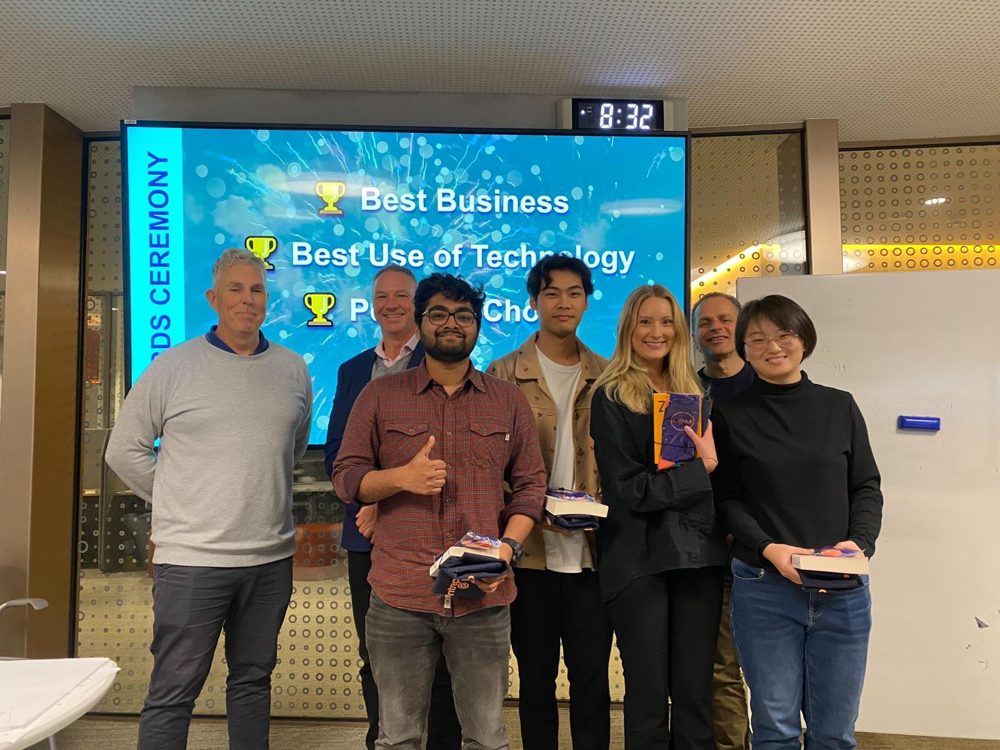

GuideEyes

Transforming Lives with AI-Powered Glasses
Cutting-edge technology met human-centered design in a start-up journey at Monash University in Melbourne.
Challenged to create an innovative product using Artificial Intelligence, my team collaborated to develop smart glasses aimed at enhancing the quality of life for dementia patients by assisting with memory recall, cognitive support, and overall well-being.The journey began with a comprehensive blend of market research and user research within the field. To identify market gaps and user needs, we delved into prior solutions and conducted phone interviews with dementia helplines.
Realizing that existing solutions provided limited assistance by providing only 1-2 support features in one product, we saw the potential of a product that seamlessly combines all necessary features into one. Accordingly, we brainstormed possible solutions for combining these features to address the market gap. We researched the technological capabilities of different wearable solutions and AI and conducted additional phone interviews, discussing a range of features that could be tailored to meet user needs.
Having gathered insights, we concluded that wearable glasses stood out as the most appropriate solution, allowing many promising features in one product. We started conceptualizing the design and features, and created a Lo-Fi prototype of the glasses in InDesign and a simple companion app in Canva. To showcase each feature, we created images of different use cases from the perspective of the glasses, as seen at the top of this page.
Product Demonstration


Presentation and Competition
The project ended with a product brief presentation for professionals in the tech industry, featuring a competition across three categories: Best Business, Best Use of Technology, and People's Choice. Among many participating groups, our team was honoured to win the "Best Use of Technology" award.
👉View the project presentation here👈 